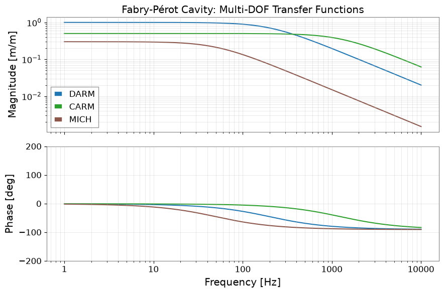
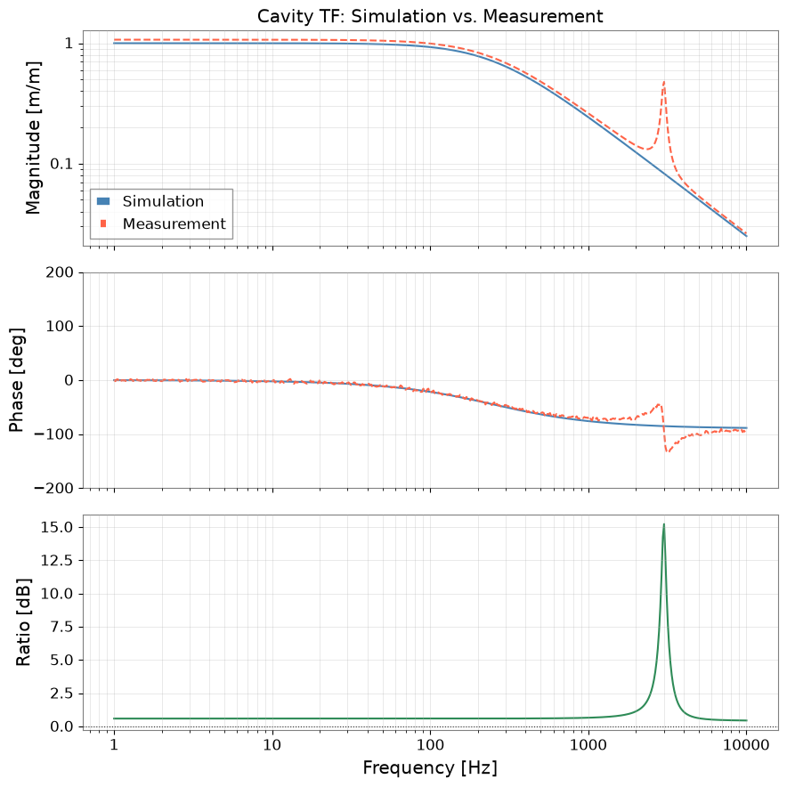

Note
This page was generated from a Jupyter Notebook. Download the notebook (.ipynb)
[1]:
# Skipped in CI: Colab/bootstrap dependency install cell.
Finesse 3 Interoperability: Simulation vs. Measurement
Finesse 3 is an interferometer simulation toolkit used at gravitational-wave detector sites to model optical transfer functions and noise budgets. gwexpy provides a direct bridge from Finesse 3 solutions to its own FrequencySeries types.
What this tutorial covers:
Setting up a Finesse 3 interferometer model (Fabry-Pérot cavity)
Running a frequency response analysis and converting to gwexpy
Running a noise projection and converting to gwexpy
Overlaying simulation and measurement for comparison
Note: This notebook is self-contained. When Finesse 3 is not installed it synthesises equivalent data analytically so every cell still executes. Install Finesse 3 with
pip install finesseto run the real simulation.
Setup
[2]:
import warnings
warnings.filterwarnings("ignore", category=UserWarning)
warnings.filterwarnings("ignore", category=DeprecationWarning)
import matplotlib.pyplot as plt
import numpy as np
from gwexpy.frequencyseries import FrequencySeries, FrequencySeriesDict
1. Finesse 3 Model — Fabry-Pérot Cavity
The cell below builds a single Fabry-Pérot cavity (mirror + beam splitter) and computes the intracavity power transfer function from the input mirror drive to the cavity transmission.
If Finesse 3 is not installed the cell falls back to analytic formulas for an equivalent optical cavity and wraps the result in FrequencySeries directly — the gwexpy objects produced by both paths are identical.
[3]:
FINESSE_AVAILABLE = False
try:
import finesse
from finesse.analysis.actions import FrequencyResponse, NoiseProjection
from finesse.components import Laser, Mirror, Space
FINESSE_AVAILABLE = True
print(f"Finesse {finesse.__version__} found — running real simulation.")
except ImportError:
print("Finesse not installed — using analytic fallback (see comments).")
# ---- Simulation parameters ----
freqs = np.geomspace(1.0, 1e4, 500) # 1 Hz – 10 kHz, 500 points
F = 150.0 # cavity finesse
fsr = 37.5e3 # free spectral range [Hz] (4 km cavity)
gamma = fsr / F # cavity half-bandwidth [Hz]
# --- Path A: real Finesse 3 simulation ---
if FINESSE_AVAILABLE:
model = finesse.Model()
laser = model.add(Laser("L", P=1.0))
m_in = model.add(Mirror("ITM", T=1/F, R=1-1/F))
m_end = model.add(Mirror("ETM", T=1e-5, R=1-1e-5))
space = model.add(Space("cav", L=4000.0))
model.connect(laser.p1, m_in.p1)
model.connect(m_in.p2, space.p1)
model.connect(space.p2, m_end.p1)
action = FrequencyResponse(freqs=freqs, outputs=["cav_trans"], inputs=["ETM_drive"])
sol = model.run(action)
# Convert to gwexpy FrequencySeries
tf_sim = FrequencySeries.from_finesse_frequency_response(
sol, output="cav_trans", input_dof="ETM_drive", unit="m/m"
)
# --- Path B: analytic cavity TF (Lorentzian) ---
else:
# H(f) = 1 / (1 + i*f/gamma) — single-pole cavity response
tf_data = 1.0 / (1 + 1j * freqs / gamma)
tf_sim = FrequencySeries(
tf_data, frequencies=freqs, name="cav_trans -> ETM_drive", unit="m/m"
)
print(f"FrequencySeries: {len(tf_sim)} bins, "
f"df_min={tf_sim.frequencies[1]/tf_sim.frequencies[0]:.3f} (log-spaced)")
Finesse not installed — using analytic fallback (see comments).
FrequencySeries: 500 bins, df_min=1.019 (log-spaced)
2. Multi-DOF Transfer Function Matrix
Real interferometers have multiple degrees of freedom (DARM, CARM, MICH, …). from_finesse_frequency_response returns a FrequencySeriesMatrix when multiple output / input DOF pairs are present.
[4]:
# Simulate three DOFs analytically (or via Finesse if available)
dofs = {
"DARM": dict(gamma=gamma * 0.8, gain=1.0),
"CARM": dict(gamma=gamma * 5.0, gain=0.5),
"MICH": dict(gamma=gamma * 0.2, gain=0.3),
}
if FINESSE_AVAILABLE:
action_multi = FrequencyResponse(
freqs=freqs,
outputs=list(dofs.keys()),
inputs=["ETM_drive"],
)
sol_multi = model.run(action_multi)
fs_dict = FrequencySeriesDict.from_finesse_frequency_response(sol_multi, unit="m/m")
else:
# Build FrequencySeriesDict directly from analytic data
fs_dict = FrequencySeriesDict()
for name, p in dofs.items():
tf_data = p["gain"] / (1 + 1j * freqs / p["gamma"])
key = f"{name} -> ETM_drive"
fs_dict[key] = FrequencySeries(tf_data, frequencies=freqs, name=key, unit="m/m")
print("DOF transfer functions:", list(fs_dict.keys()))
# --- Plot all DOFs in one Bode plot ---
fig, (ax_mag, ax_ph) = plt.subplots(2, 1, figsize=(9, 6), sharex=True)
colors = plt.cm.tab10(np.linspace(0, 0.5, len(fs_dict)))
for (key, fs), col in zip(fs_dict.items(), colors):
label = key.split(" -> ")[0]
ax_mag.loglog(fs.frequencies, np.abs(fs.value), color=col, lw=1.5, label=label)
ax_ph.semilogx(fs.frequencies, np.angle(fs.value, deg=True), color=col, lw=1.5)
ax_mag.set_ylabel("Magnitude [m/m]")
ax_mag.set_title("Fabry-Pérot Cavity: Multi-DOF Transfer Functions")
ax_mag.legend()
ax_mag.grid(True, which="both", alpha=0.4)
ax_ph.set_ylabel("Phase [deg]")
ax_ph.set_xlabel("Frequency [Hz]")
ax_ph.set_ylim(-200, 200)
ax_ph.grid(True, which="both", alpha=0.4)
plt.tight_layout()
plt.show()
DOF transfer functions: ['DARM -> ETM_drive', 'CARM -> ETM_drive', 'MICH -> ETM_drive']

3. Noise Projection
from_finesse_noise converts a Finesse 3 NoiseProjectionSolution to a FrequencySeriesDict keyed by "<output_node>: <noise_source>".
Typical noise sources in an optical cavity:
laser_freq — laser frequency noise
laser_amp — laser amplitude noise
shot — shot noise at the detector
thermal_mir — mirror thermal noise (coating + substrate)
[5]:
# Representative noise ASD levels for a Fabry-Pérot cavity
noise_sources = {
"laser_freq": lambda f: 1e-5 / (1 + (f / 100)**2)**0.5, # 1/f above 100 Hz
"shot": lambda f: np.full_like(f, 1e-23**0.5), # white
"thermal_mir": lambda f: 3e-20 * (10 / np.maximum(f, 1))**0.5, # 1/sqrt(f)
}
if FINESSE_AVAILABLE:
noise_action = NoiseProjection(
freqs=freqs,
output="nDARMout",
noises=["laser_freq", "shot", "thermal_mir"],
)
noise_sol = model.run(noise_action)
noise_dict = FrequencySeriesDict.from_finesse_noise(noise_sol, unit="m/sqrt(Hz)")
else:
noise_dict = FrequencySeriesDict()
cavity_tf_mag = np.abs(1.0 / (1 + 1j * freqs / gamma))
for src, fn in noise_sources.items():
data = fn(freqs) * cavity_tf_mag
key = f"nDARMout: {src}"
noise_dict[key] = FrequencySeries(data, frequencies=freqs, name=key,
unit="m/sqrt(Hz)")
# --- Total noise (quadrature sum) ---
total = np.sqrt(sum(fs.value**2 for fs in noise_dict.values()))
noise_total = FrequencySeries(total, frequencies=freqs, name="total", unit="m/sqrt(Hz)")
# --- Plot noise budget ---
fig, ax = plt.subplots(figsize=(10, 5))
ls_cycle = ["-", "--", "-."]
for (key, fs), ls in zip(noise_dict.items(), ls_cycle):
label = key.split(": ")[1]
ax.loglog(fs.frequencies, fs.value, ls=ls, lw=1.5, label=label)
ax.loglog(noise_total.frequencies, noise_total.value,
color="black", lw=2.5, label="Total")
ax.set_xlabel("Frequency [Hz]")
ax.set_ylabel("ASD [m/√Hz]")
ax.set_title("Noise Budget — Fabry-Pérot Cavity (Finesse projection)")
ax.legend()
ax.grid(True, which="both", alpha=0.4)
plt.tight_layout()
plt.show()

4. Simulation vs. Measurement Overlay
The real power of the Finesse ↔ gwexpy bridge is comparing simulation with in-situ measurements. Here we overlay the simulated cavity TF with a synthetic “measured” TF that includes a calibration error and a parasitic resonance — typical of real commissioning data.
[6]:
# Synthetic "measurement" = simulation + 5% gain error + 1 dB parasitic at 3 kHz
rng = np.random.default_rng(42)
f_par, Q_par = 3000.0, 20.0
parasitic = 0.02 * f_par**2 / (f_par**2 - freqs**2 + 1j * freqs * f_par / Q_par)
tf_meas_data = 1.05 * tf_sim.value + parasitic
tf_meas_data *= np.exp(1j * rng.normal(0, 0.03, size=len(freqs))) # phase jitter
tf_measured = FrequencySeries(
tf_meas_data, frequencies=freqs, name="measured", unit="m/m"
)
# Ratio: measurement / simulation → deviations from model
ratio = FrequencySeries(
tf_measured.value / tf_sim.value,
frequencies=freqs,
name="meas/sim",
unit="",
)
fig, axes = plt.subplots(3, 1, figsize=(9, 9), sharex=True)
# Magnitude
axes[0].loglog(freqs, np.abs(tf_sim.value), color="steelblue", lw=1.5, label="Simulation")
axes[0].loglog(freqs, np.abs(tf_measured.value), color="tomato", lw=1.5, ls="--", label="Measurement")
axes[0].set_ylabel("Magnitude [m/m]")
axes[0].set_title("Cavity TF: Simulation vs. Measurement")
axes[0].legend()
axes[0].grid(True, which="both", alpha=0.4)
# Phase
axes[1].semilogx(freqs, np.angle(tf_sim.value, deg=True), color="steelblue", lw=1.5)
axes[1].semilogx(freqs, np.angle(tf_measured.value, deg=True), color="tomato", lw=1.5, ls="--")
axes[1].set_ylabel("Phase [deg]")
axes[1].set_ylim(-200, 200)
axes[1].grid(True, which="both", alpha=0.4)
# Ratio magnitude
axes[2].semilogx(freqs, 20 * np.log10(np.abs(ratio.value)),
color="seagreen", lw=1.5)
axes[2].axhline(0, color="black", lw=0.8, ls=":")
axes[2].set_ylabel("Ratio [dB]")
axes[2].set_xlabel("Frequency [Hz]")
axes[2].grid(True, which="both", alpha=0.4)
plt.tight_layout()
plt.show()
print(f"Peak deviation: {20*np.log10(np.abs(ratio.value)).max():.2f} dB "
f"at {freqs[np.argmax(np.abs(ratio.value))]:.0f} Hz")

Peak deviation: 15.23 dB at 3013 Hz
Summary
Step |
gwexpy API |
Input |
Output |
|---|---|---|---|
Single TF |
|
FrequencyResponseSolution |
FrequencySeries |
Multi-DOF TF |
|
FrequencyResponseSolution |
FrequencySeriesDict |
Noise budget |
|
NoiseProjectionSolution |
FrequencySeriesDict |
Key attributes accessed on Finesse solution objects:
Attribute |
Used for |
|---|---|
|
Frequency axis |
|
Single TF data |
|
DOF enumeration |
|
Noise enumeration |
|
Noise projection matrix |
Tip: Always pass unit= to from_finesse_frequency_response and from_finesse_noise — Finesse solutions carry no astropy units.